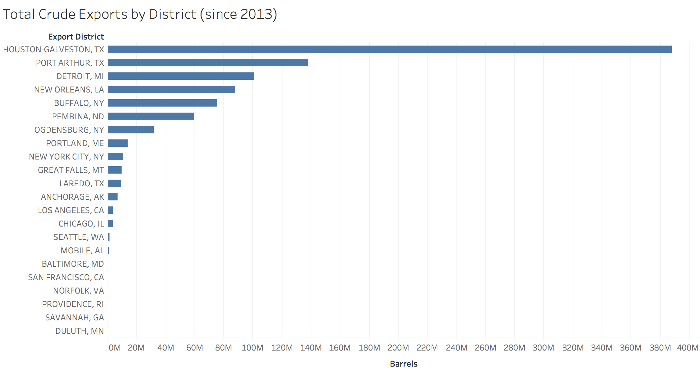
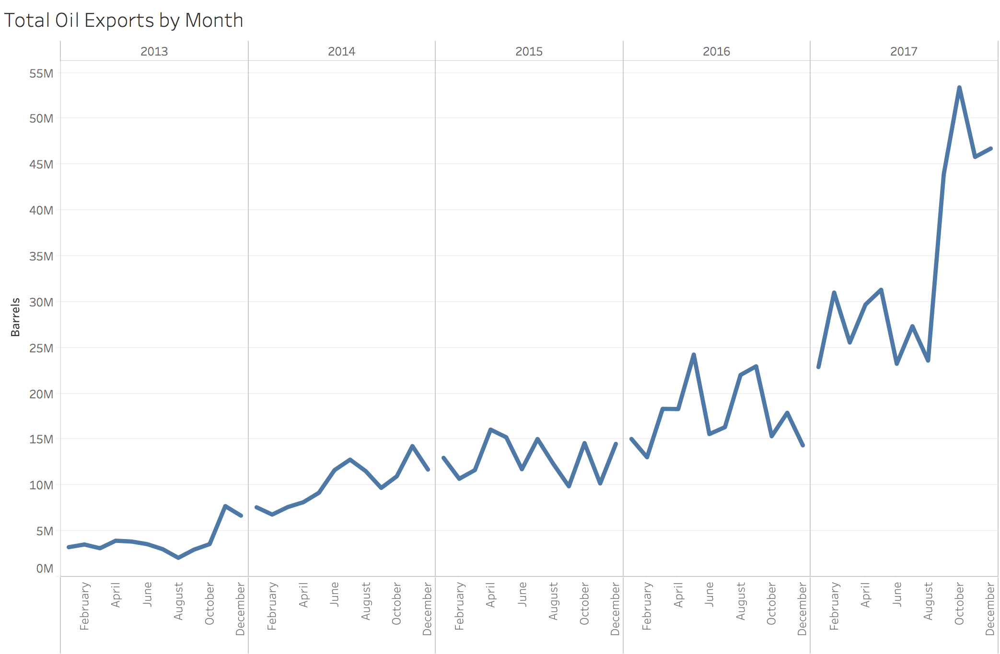

In an initial examination of the data we aggregate all exports by their destination country to assess whether the distribution of exports is as expected. Canada and China are the two largest importers of American oil, which is confirmed here.
Assignment 2: Exploratory Data Analysis
Tony Cannistra — tonycan@uw.edu
Dataset
These data represent monthly United States crude oil exports from 2013-2017. Each data point represents the number of barrels of oil exported per month since 2013 for a single (U.S. export district, export destination country) tuple. I became interested in these data after a conversation with a friend in the School of Marine and Environmental Affairs here at UW, who is studying the dynamics and risk of increased oil movement across the ocean. The dataset is government-sourced, with the U.S. Census Bureau as the managing agency.
The data are available online at the U.S. International Trade Commission's website. The raw data for this analysis are here.
Initial Analysis Questions
- Overall Question: How has the export of United States crude oil changed over time?
- What regions of the world receive the majority of U.S. crude oil?
- What regions of the United States export the majority of the U.S. crude oil?
- How has the international allocation of oil exports changed over time?
Discoveries & Insights
To get a better idea of the geographic distribution of importing countries we present a filled map rendering of the above vizualization, indicating both the relative spread of geographic reach and export magnitude. Clearly there is a majority of oil exported to Canada, and that many European countries are importers of U.S. crude oil.

In a similar first pass over the data we examine the total number of barrels of oil exported by each Census-designated exporting district in the United States. We note that this figure is consistent with the established trend of export locations. We've learned here that there's a considerable southern bias in export districts in terms of the number of barrels exported.

Here we show the total U.S. crude exports by month over time for the entire dataset. These data support an established trend of increased U.S. crude oil export in the past several years.
Here we combine the above two analyses by examining the top 5 exporting districts over time. This plot shows the number of barrels of oil exported by a U.S. Census-designated export district, aggregated yearly. We choose only the top 5 districts as there are too many to show on one plot. We observe both the general trend of increased crude oil exports and the significant shifts in those districts which export the majority of crude oil, which is an interesting insight. We use the next few plots to examine the source of this trend. Houston-Galveston, TX maintains top status throughout time, but many other districts jostle for places in the top 5 exporting districts.
Here we show the top 5 export destination countries by year in terms of percent of total U.S. oil exports. We notice the disappearance and resurgence of China as a major U.S. crude importer, and the consistency of Canada as the primary importer of U.S crude, and we can infer by the magnitude of the percentages plotted that these top 5 countries in each year represent the majority of U.S. export destinations (with 2013 as a special case--only Canada and China imported U.S. crude).
To get a rough idea of how the distribution and number of U.S. crude oil importers has changed over time, we augment our previous line plot of exports over time with a filled-area plot describing the exports per country. Though we've considerably overplotted these data, we can clearly see a large change in the number of U.S. crude oil importing countries beginning in 2016. A major policy change is the source of this significant departure from the previous years' trends.
We improve upon the above plot by aggregating the distribution of export destination countries by continent, which clearly demonstrates the increase in Asian and European importers in 2016 and 2017.
This plot demonstrates the number of countries each U.S. exporting district exports crude oil to, colored by continent. We observe that the majority of landlocked or northern districts export only to Canada (likely by proximity to pipelines or rail terminals) and that the oceanic ports have a wide range of exporting countries.
Finally to get a better idea of the geographic spread of the above data, we create this map with pie charts on each export district, where the pie on each location describes the number of countries per continent to which the exporting district sends oil. It's clear that the majority of northern export districts only export to Canada, where the majority of southern districts adjacent to water are exporting further afield.
Summary
This exploratory data analysis has serviced the above 3 analysis questions by lending verifiable credibility to the actual dataset and by visualizing useful aggregations of these data. In particular I've identified several trends in the export of U.S. crude oil over time. I observe the general increase in volume of crude oil exported, along with considerable shifts in the geography of importing countries over time, with milestones in 2016 when certain regulations governing U.S. crude oil exports were lifted, something I learned after viewing these visual representations and consulting an expert. Further, I've been able to determine the regions which export the majority of U.S. crude oil, and have seen that there's a significant difference in the breadth of exporting districts in terms of the regions to which they export.